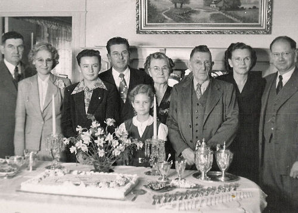

| Fairbairn History | |
 |
Photo: Celebration of my grandparent's Fiftieth Wedding Anniversary, 1952. The adults are, from left to right: my uncle, Edwin A. Fairbairn; my mother, Clara (Juvenal) Fairbairn; my father, Robert L. Fairbairn; my grandmother, Isabella (Cumming) Fairbairn, often known as "Belle"; my grandfather, James Peter Fairbairn, also known as JP; my aunt, Marion (Fairbairn) Miller; and Marion's husband, John Miller. The girl standing in front is John and Marion's daughter, Marilyn (Miller) Allison. |
|
My father, Robert L. Fairbairn, was born in Sacramento California and lived in the Sacramento area his entire life. For most of his adult life, he worked at Friend and Terry Lumber Company, where he became the Assistant Manager. When the lumber company went out of business, he went to work in the Sacramento County Building Inspection Department, where he remained until his retirement.
My uncle, Edwin Fairbairn, was influential in Sacramento City Government, holding the positions of City Engineer and City Manager. My Aunt Marion's husband, John Miller, was a Professor of English Literature at Sacramento City College. My Grandfather worked at Friend and Terry Lumber Company for many years before my father went to work there. Following is a brief history of this branch of the Fairbairns, beginning with my grandfather James P. Fairbairn, and going as far back as is currently known with a fair degree of certainty. The names of my direct paternal ancestors are underlined in the text. Many thanks to Lorna Henderson and others for their diligent research and analysis. A gateway into their study of Fairbairn geneology can be found in Lorna's blog: fairbairnsall.blogspot.com. James P. Fairbairn (1870) As a young man, James P. Fairbairn (born 1870) moved from Ontario Canada to Sacramento California USA, where he lived for the rest of his life. He married Isabella Cumming (born 1878), and they had three children: Edwin A., Robert L., and Marion E. John Fairbairn (1819) John Fairbairn (born 1819 at Earlston Berwickshire Scotland) married Isabella Brockie (born approx. 1826) and they moved from Scotland to Lancaster New York USA in 1853. They had one child: John Fairbairn. Some time later, they moved to Ontario Canada. Isabella died approx. 1858 and John Sr. married Helen Taylor approx. 1859. They had three children: Robert A., Thomas, and James P. John Fairbairn (approx. 1788) John Fairbairn (born approx. 1788) of Berwickshire Scotland married Janet Henderson (born approx. 1791). They had six children: Margaret, William, John, Andrew, Janet, and Anne. John Fairbairn (approx. 1745) John Fairbairn (born approx. 1745 at Smailholm Roxburghshire Scotland) married Helen Atcheson (born approx. 1750). Records of Legerwood Kirk (church) Sessions of 28 April 1771 indicate that John and Helen were married "irregularly" at Edinburgh, but were absolved from guilt after admitting their misdeed and making a specified contribution to the fund for the poor. They had five children: Elizabeth, a female of unknown name, Grizel, John, and George. |
|